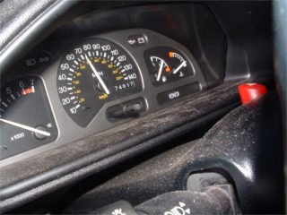
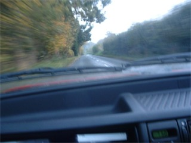
went to work in a different place. got a lift with the wife who drives quite
fast on these small lanes
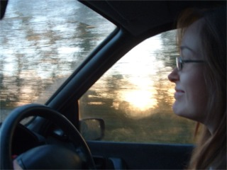
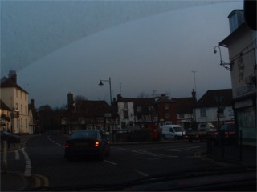
becky enjoying the speed.
lenham. there might be a park here soon
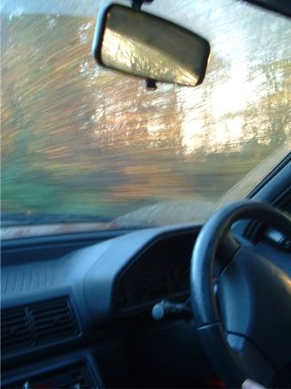
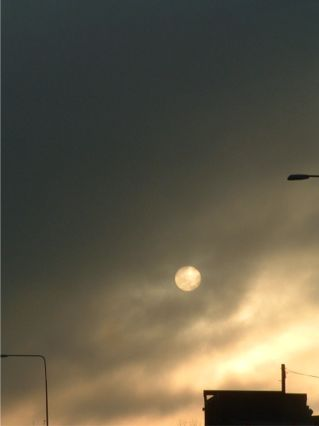
more speed.
the sun or moon
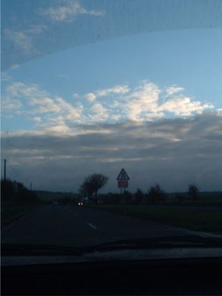
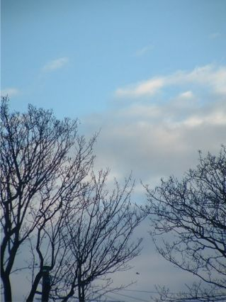
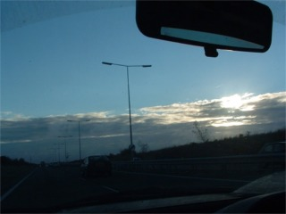
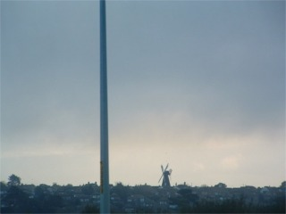
whitstable and herne bay
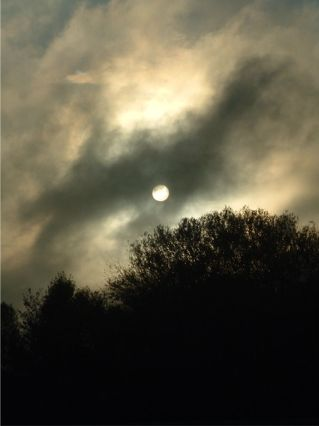
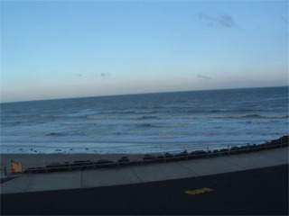
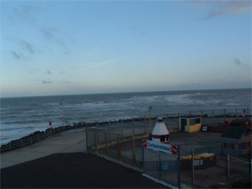
the beach at ramsgate. i didn't have any swimwear or a towel, but i still didn't
want to go in the sea.
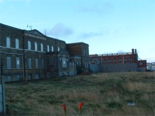
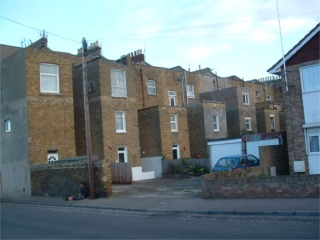
the royal seabathing hospital is where becky works. it's very run down and most
of it is not used. perfect place
for a ghetto park, but you have to get over the wall with broken glass on it.
nice and friendly for a hospital.
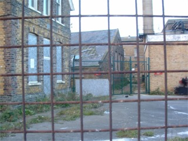
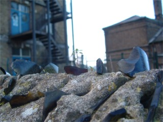
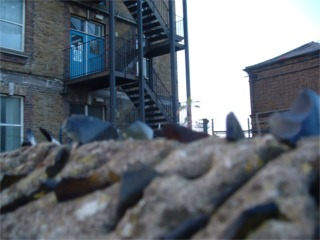
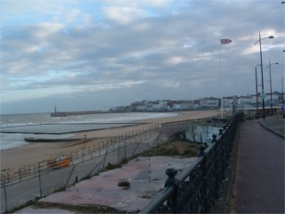
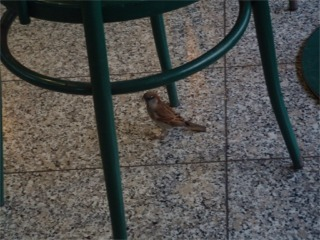
the beach at margate. in the summer this would be packed. a sparrow in ashford
station. a few years ago
everyone was worried that sparrows were dying out but they seem to be making a
come back. this was in a shop.